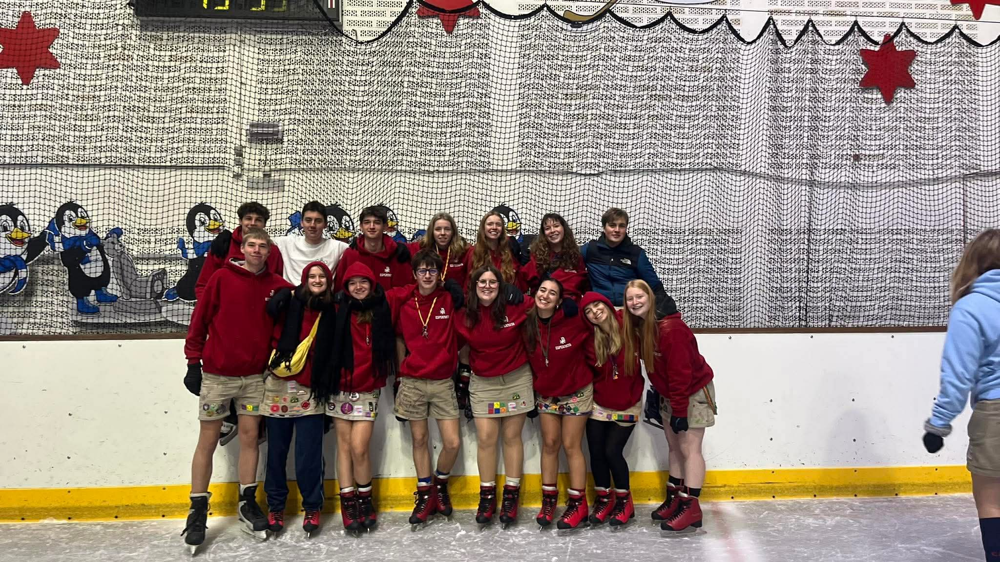
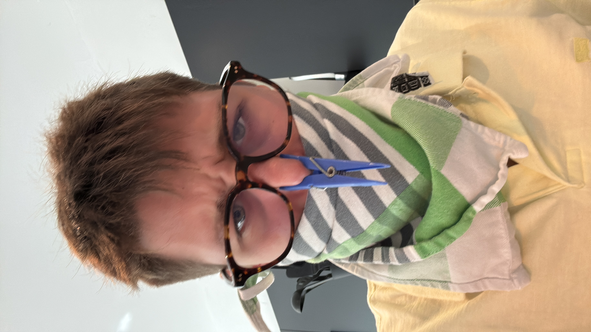
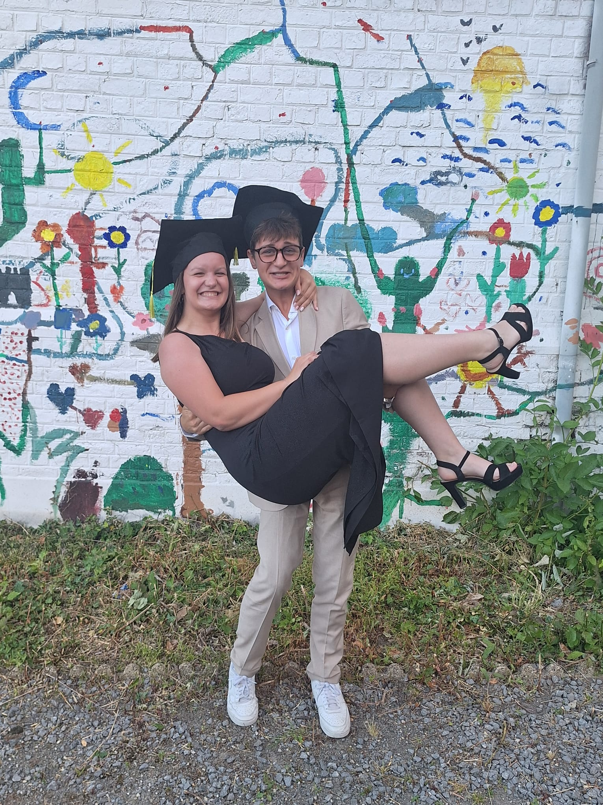

Wie ben ik?

Hey, ik ben Xandro De Croock, een student Multimedia & Creatieve Technologie. Ik ben vooral geïnteresseerd in hoe mensen omgaan met websites en apps, en waarom iets duidelijk of net verwarrend aanvoelt.
Ik werk graag creatief, maar vind het ook belangrijk dat mijn ontwerpen logisch en gebruiksvriendelijk zijn. Daarom focus ik me niet alleen op hoe iets eruitziet, maar ook op hoe het werkt voor de gebruiker.
Tijdens mijn projecten heb ik al gewerkt met tools zoals Figma, HTML en CSS. Ik leer graag bij en probeer mezelf steeds te verbeteren door nieuwe dingen uit te testen.
Mijn doel is om later verder te groeien in UX design en digitale ervaringen te maken die zowel mooi als eenvoudig in gebruik zijn.
Meer over mij




